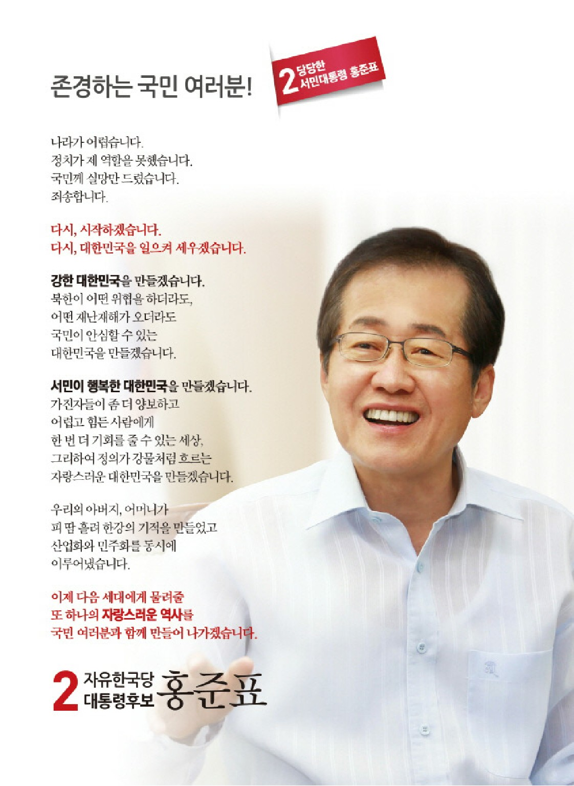
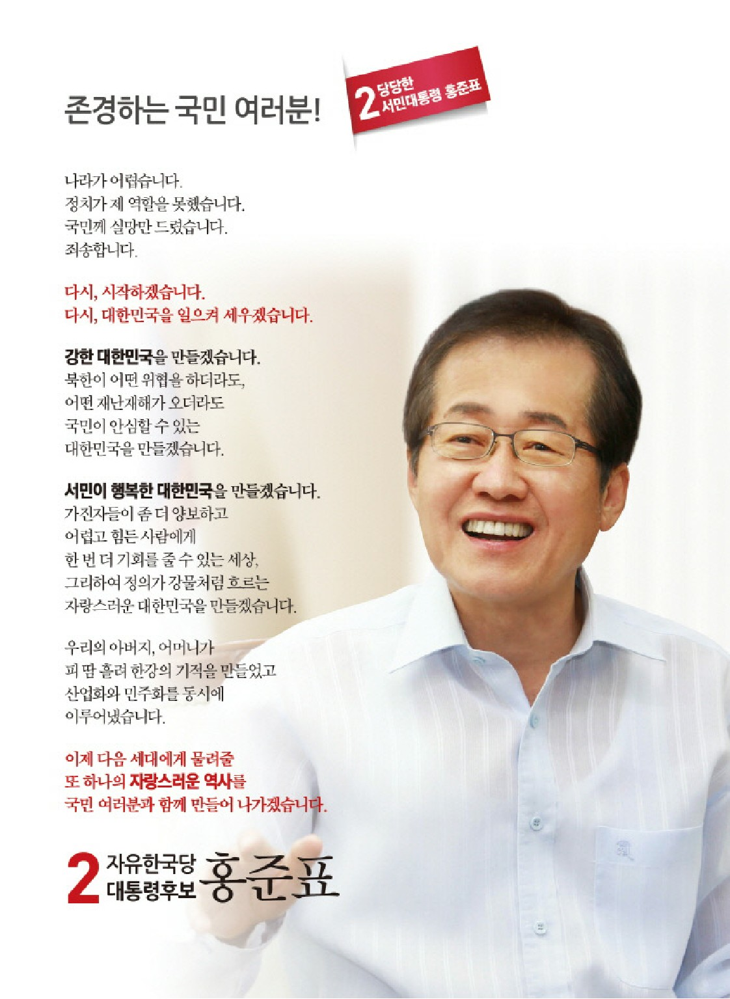
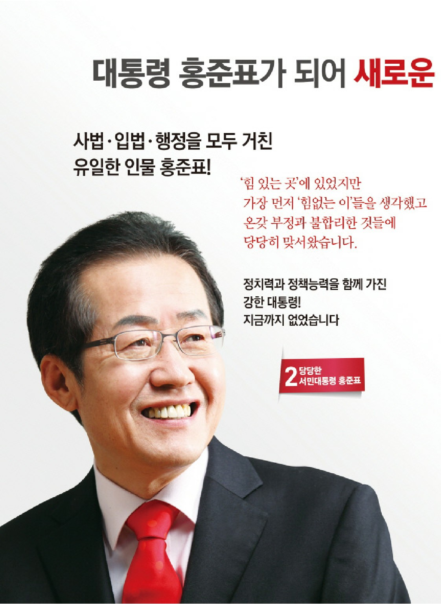
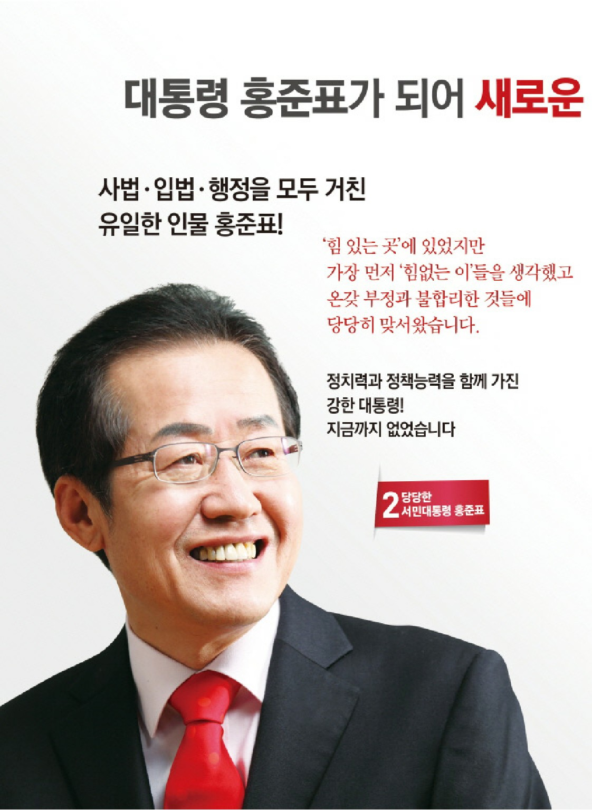
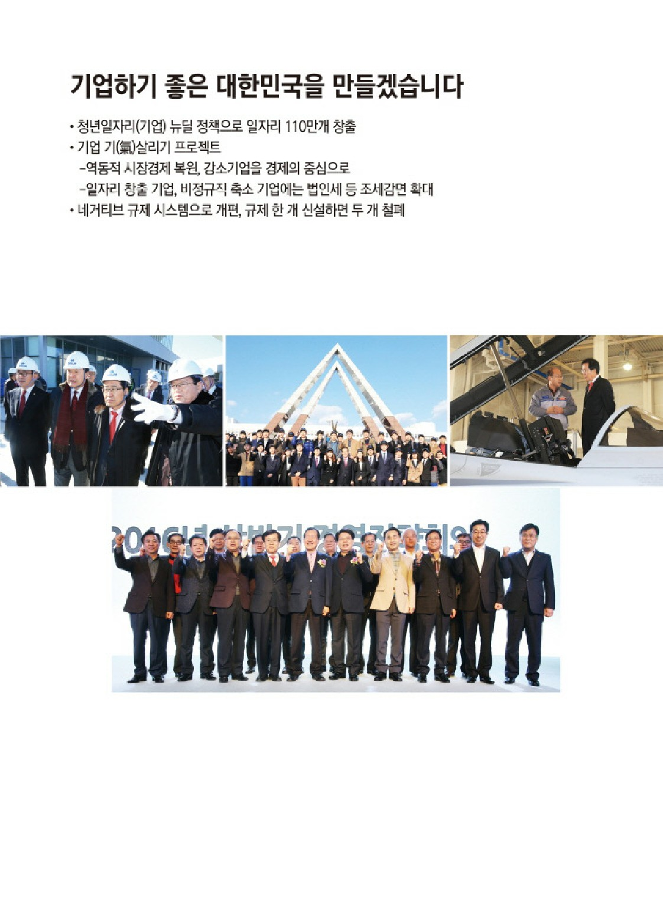
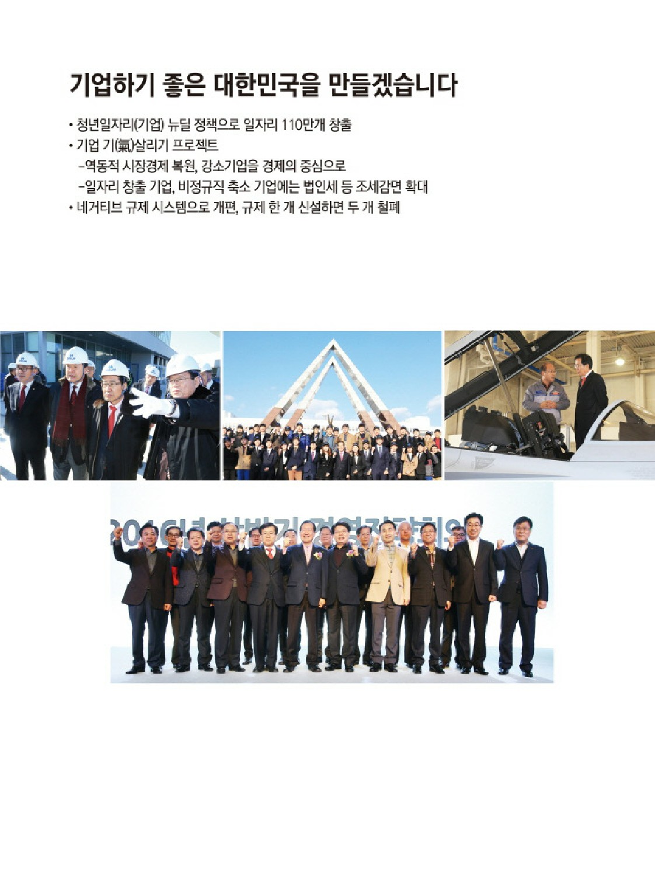
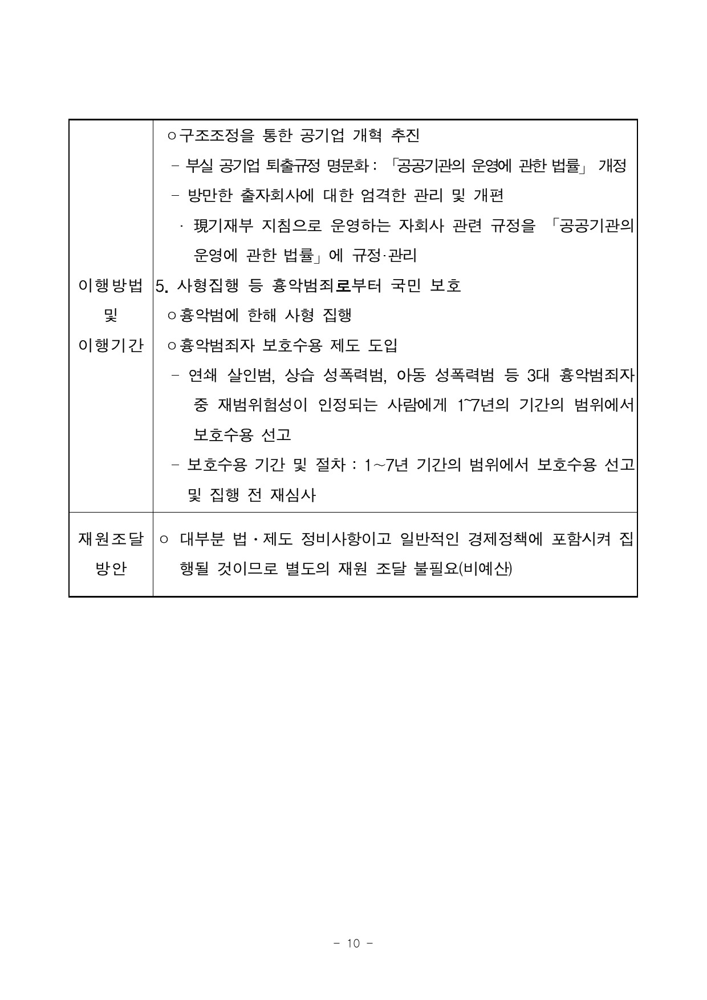
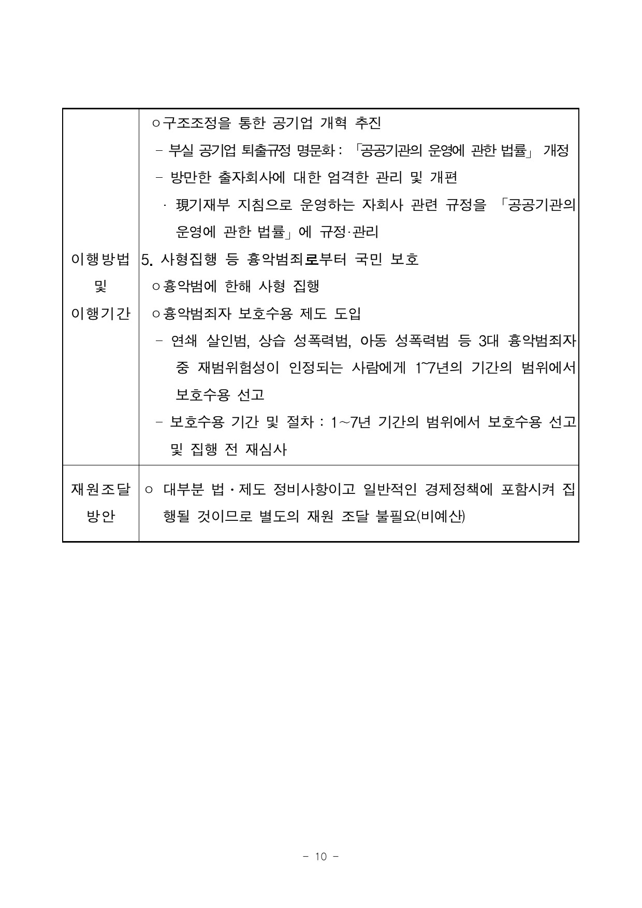
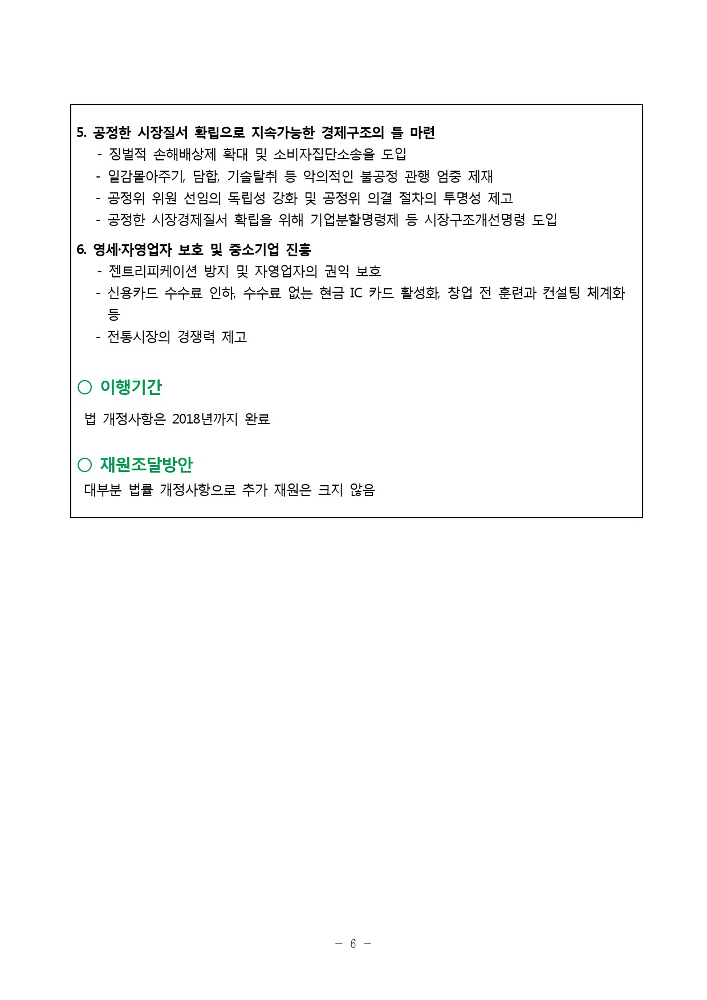
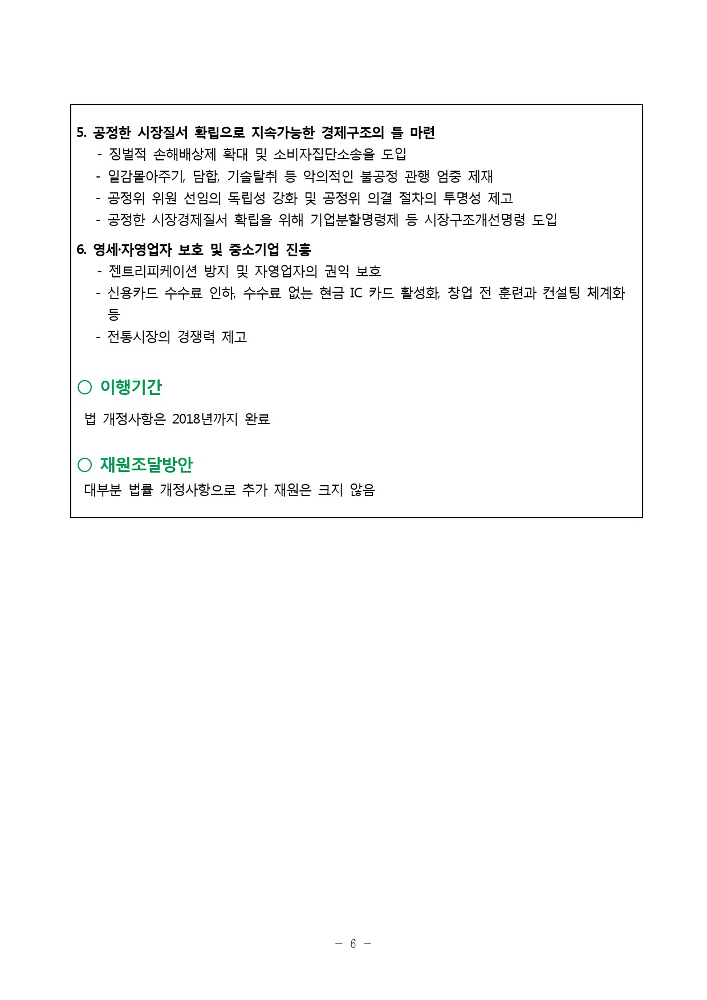

“당당한 리더십, 서민대통령 홍준표”
오늘, 저는 이곳 서문시장에서 새로운 대한민국을 위한 위대한 도전을 시작합니다.
화재로 모든 것을 잃어버렸지만 굳건히 다시 일어선 서문시장 상인 여러분 앞에서,
국민 여러분께 약속드립니다.
쓰러져가는 대한민국의 우파 보수세력을 다시 일으켜 세우겠습니다.
내 나라가 자랑스러운 당당한 대한민국을 만들겠습니다. 오늘 우리가 함께 하는 첫걸음이 우리가 꿈꾸는 대한민국의 힘찬 미래를 열어갈 것입니다.
존경하는 국민 여러분!
지난 수개월 간 우리는 앞이 보이지 않는 혼돈의 터널을 지나왔습니다.
국민의 아픔을 보듬어야할 정치는 오히려 국민의 짐이 되었습니다. 경제는 탈출구가 보이지 않는 침체의 늪에 빠진 지 오래입니다. 사회는 대통령 탄핵이라는 초유의 사태로 인해 촛불과 태극기로 양분되어 있습니다. 북한은 천문학적 대북지원에도 불구하고 핵탄두를 넘어 ICBM을 개발하는 등 무력침략의 야욕을 버리지 않고 있습니다. 외교는 미국과 중국의 패권경쟁 사이에서 실리도 명분도 없이 흔들리고 있습니다.
정치, 사회, 경제, 외교, 남북관계, 어느 것 하나 제대로 된 것이 없는 천하대란(天下大亂)의 위기입니다.
이제 다시 시작해야 합니다.
넘어진 이 자리에서 다시 일어서야 합니다.
지금 이 시대가 우리에게 요구하는 것은 정권의 교체도, 정치의 교체도, 세대의 교체도 아닙니다.
그것은 바로 리더십의 교체입니다.
소통과 통합이라는 위선의 가면에 숨어 눈치만 보는 리더십으로는 아무 것도 할 수 없습니다.
반대가 두려워 결정을 미루고, 여론이 무서워 할 일도 못하는 유약한 리더십으로는 지금의 난관을 극복할 수 없습니다. 위기를 기회로 만들 수 있는 대란대치(大亂大治)의 리더십, 어떤 어려움이 있어도 해야 할 일은 해내고 마는 당당한 리더십입니다.
천하대란의 위기 속에서 대한민국이 요구하는 리더십이고 시대정신인 것입니다. 저는 22년 동안 정치를 하면서 단 한 번도 계파에 속해보지 않았습니다. 계파정치, 패권정치의 현실 속에서도 오로지 제 자신의 힘과 노력만으로 집권여당의 원내대표, 당 대표까지 했습니다.
어떤 어려움과 반대가 있어도 해야 할 일은 했습니다. 그것이 국민이 부여한 책임이기 때문입니다.
제가 두려운 것은 실패가 아니라 실패가 두려워 도전조차 하지 않는 것입니다.
존경하는 국민 여러분!
저는 이런 대통령을 꿈꿉니다.
첫째, 서민대통령이 되겠습니다.
저는 초등학교 6년 동안 다섯 번이나 전학을 다녔습니다. 가난은 저희 가족을 창녕에서 대구로, 다시 창녕으로 합천으로, 삶의 벼랑 끝으로 내몰았습니다. 이곳 대구 내당동 달셋방에서 초등학교와 중학교 고등학교를 졸업할 때 까지 점심 도시락을 싸갈 형편이 못돼 수돗물로 배를 채우기도 했습니다. 가난은 머리로 이해하는 것이 아니라 지친 몸과 아픈 시간으로 기억하는 것입니다.
정권이 바뀔 때마다 수많은 복지정책이 쏟아지고 해가 바뀔 때마다 새로운 서민경제정책이 발표되지만 십 년 전에 비해 서민들의 삶은 조금도 달라지지 않았습니다. 서민들이 진짜 원하는 게 무엇이며, 그것을 어떻게 실현할 수 있는지를 아는 서민대통령만이 서민의 삶을 바꿀 수 있습니다. 경남도지사로 4년여 동안 일하면서 서민복지와 서민자녀 교육지원사업에 모든 행정력을 동원한 것도 이 때문입니다.
둘째, 당당한 대통령이 되겠습니다.
국가의 품격과 국민의 자존심을 지킬 수 있는 당당한 대통령이 되겠습니다. 어떤 어려움이 있어도 할 일은 반드시 해내는 당당한 대통령이 되겠습니다. 비록 욕을 먹더라도 국익에 도움이 된다면 어떤 어려움도 극복해 나가겠습니다.
사드배치에 대한 중국의 보복에는 단호하게 대응하겠습니다. 북핵 사태에 대한 중국의 책임 있는 행동을 당당히 요구할 것입니다.
한일 위안부 합의는 무효입니다. 위안부는 합의의 대상이 아니라 우리가 영원히 기억해야할 역사입니다. 10억엔이 아니라 10조엔을 준다해도 돈으로 거래할 수 없는 민족의 가슴 아픈 역사입니다.
셋째, 정의로운 대통령이 되겠습니다.
억울하게 누명을 쓴 아버지를 보고 진로를 바꿔 육사대신 법대를 갔고, 검사가 되었습니다. 11년 동안 부정, 부패와 싸웠습니다. 정의를 위해 권력에 맞서 싸웠습니다. 결국 부당한 권력 때문에 제가 그토록 갈망했던 검사직을 스스로 버려야 했지만 국민 여러분께서는 ‘모래시계 검사’라는 영광을 제게 주셨습니다. 그 이름에 부끄럽지 않은 억강부약(抑强扶弱)의 정의로운 대통령이 되겠습니다.
존경하는 국민 여러분,
저는 이런 대한민국을 꿈꿉니다.
첫째, 청년과 서민이 꿈꿀 수 있는 세상을 만들겠습니다.
청년과 서민은 돈이 없어서 불행한 것이 아니라
꿈과 희망이 없어서 불행한 것입니다.
90년대 초반까지만 하더라도 대학을 졸업하면 10장 이상의 취업추천서를 받았습니다.
그러나 지금은 백군데 이상 이력서를 넣어도 취업이 되지 않습니다.
한여름 밤의 꿈이 되어버렸습니다.
일자리가 복지의 시작입니다.
해외에 나가있는 우리 기업이 1만2000개에 달합니다.
제조업만 해도 5800개 사에 현지 채용 인력이 286만 명입니다.
제조업 해외 공장의 10%만 국내로 돌아와도 29만개의 새로운 일자리가 창출됩니다.
왜 그렇게 못합니까?
전 세계가 기업을 유치하기 위해 총성 없는 전쟁을 하고 있는데 우리는 거꾸로 가고 있습니다.
연봉 1억원이 넘는 강성귀족노조와,
진보라는 가면에 숨어 갈등과 대립을 부추기는 좌파 정치세력과,
기업인을 범죄시하는 반기업정서가 우리 기업을 해외로 내몰고 있습니다.
일자리는 기업이 만드는 것입니다.
공공일자리 확대로 해결할 수 있는 문제가 아닙니다.
부자에게는 자유를 주고 서민에게는 기회를 주는 것이 진정한 복지입니다.
보편적 복지라는 이름으로 똑 같은 혜택을 제공하는 것은 복지가 아니라 공산주의식 배급입니다.
더 필���한 곳에 더 많은 지원을 해야 합니다.
복지의 결과는 얼마나 많은 사람에게 주는 가가 아니라,
얼마만큼 격차를 해소하는 가에 달려 있기 때문입니다.
둘째, 법과 원칙이 바로 선 정의로운 세상을 만들겠습니다.
대한민국에서 어느 누구도 불공정하고 불공평한 대우를 받아서는 안됩니다.
돈과 권력, 신분과 지위, 인종과 종교,
그 어떤 사회적 조건도 차별과 특권을 용인하게 해서는 안 됩니다.
정치적 주장과 거짓 선동은 엄격히 구분되어야 합니다.
거짓 선동으로 갈등과 대립을 조장하고 정치적 이익을 챙기려는 불순한 시도를 우리는 수차례 경험해 왔습니다.
5년 전 한미FTA 체결을 반대하며 국민을 선동했던 사람들,
최류탄 연기속에서 한미FTA 비준안 처리를 주도했던 저를 나라 팔아먹는 ‘매국노’라고 덮어씌웠던 사람들,
우리는 그들에게 물어야 합니다.
미국 트럼프 정부가 한미FTA를 사상 최악의 불평등 협약이라며 재협상을 요구하는 이유가 무엇인지 분명하게 대답하라고 요구해야 합니다.
미국산 쇠고기를 먹으면 광우병에 걸리고 뇌에 구멍이 숭숭 뚫려서 죽는다고 국민을 위협하고, 국민을 선동하고, 유모차에 어린 학생들까지 광장으로 내몰았던 사람들, 그들에게 응분의 책임을 물어야 합니다.
법치의 원칙이 무너지면 민주주의의 가치도 무너집니다.
산을 만나면 산을 열고, 바다를 만나면 바다를 뒤엎는 천지개벽을 해 나가겠다는 각오로 원칙을 지켜 나가겠습니다.
셋째, 내 나라가 자랑스러운 대한민국을 만들겠습니다.
우리는 일제 36년의 암흑기와 6·25의 폐허 속에서도 산업화와 민주화를 동시에 이룩해 낸 자랑스러운 역사를 가지고 있습니다.
우리 선조들이 피땀 흘려 대한민국의 독립을 이루었고, 한강의 기적을 만들었고, 민주공화국 대한민국을 완성했습니다.
이제 다음 세대에게 물려줄 또 하나의 자랑스러운 역사를 여러분과 함께 만들어 나가겠습니다.
가진 자들이 좀 더 양보하는 세상,
어렵고 힘든 사람에게 한 번 더 기회를 줄 수 있는 세상,
그리하여 정의가 강물처럼 흐르는 세상,
내 나라가 자랑스러운 대한민국을 만들겠습니다.
존경하는 국민 여러분,
지난 4년 3개월 동안 저는 경상남도지사로서 열심히 일했습니다.
많은 성과도 거두었습니다.
1조 4000억 원에 달하던 막대한 빚을 땅 한 평 팔지 않고, 행정개혁과 재정개혁 만으로 한 푼도 남기지 않고 다 갚았습니다.
광역자치단체 최초로 채무제로를 달성했고
올해부터는 사상 최초의 흑자도정을 실현합니다.
전국 시·도의 복지예산 비율은 평균 31.2%에 불과하지만 경상남도의 복지 예산은 전체예산의 37.9%나 됩니다.
개천에서 용이 날 수 있는 사회,
열심히 공부하고, 열심히 일하면 누구나 잘 살 수 있는 경상남도를 만들었습니다.
경남미래 50년 사업으로 미래 성장 동력도 충분한 기반을 마련하였습니다.
도지사가 어떤 비전을 가지고 어떻게 도정을 운영하는 가에 따라 도민의 삶과 도의 미래가 얼마만큼 바뀔 수 있는지 여실히 증명해 보였습니다.
이제 경남도정의 성과를 바탕으로 대한민국의 미래를 새롭게 건설해 보겠습니다.
존경하는 국민 여러분!
아직 여론의 흐름은 우파를 외면하고 있습니다.
좌파광풍시대입니다.
그러나 남미와 유럽에서는 좌파가 몰락했습니다.
한반도를 둘러싼 4강의 지도자는 국수주의자이자 ‘스트롱맨’입니다.
소통으로 치장한 유약한 좌파정부가 들어서면 이들은 모두 우리를 외면할 것입니다.
저는 조금도 위축되지 않습니다.
이 답답한 현실을 어떻게든 바꾸어 달라는 수많은 국민들의 외침과 명령이 들리기 때문입니다.
앞으로 51일 동안 저는 많은 부분에 대해
국민 여러분과 대화를 나누게 될 것입니다.
여러분의 생각을 듣고
또 제 생각을 말씀 드릴 것입니다.
그 과정에서 우리는 함께 대한민국의 미래를 그려 나갈 것입니다.
5월 9일,
대한민국의 서민대통령이 되어
여러분과 함께 새로운 대한민국을 만들겠습니다.
국민 여러분이 믿고 기댈 수 있는
든든하고 튼튼한 담벼락이 되겠습니다.
감사합니다.
2017. 3. 18.
홍준표 올림


 



 



 



 



 
